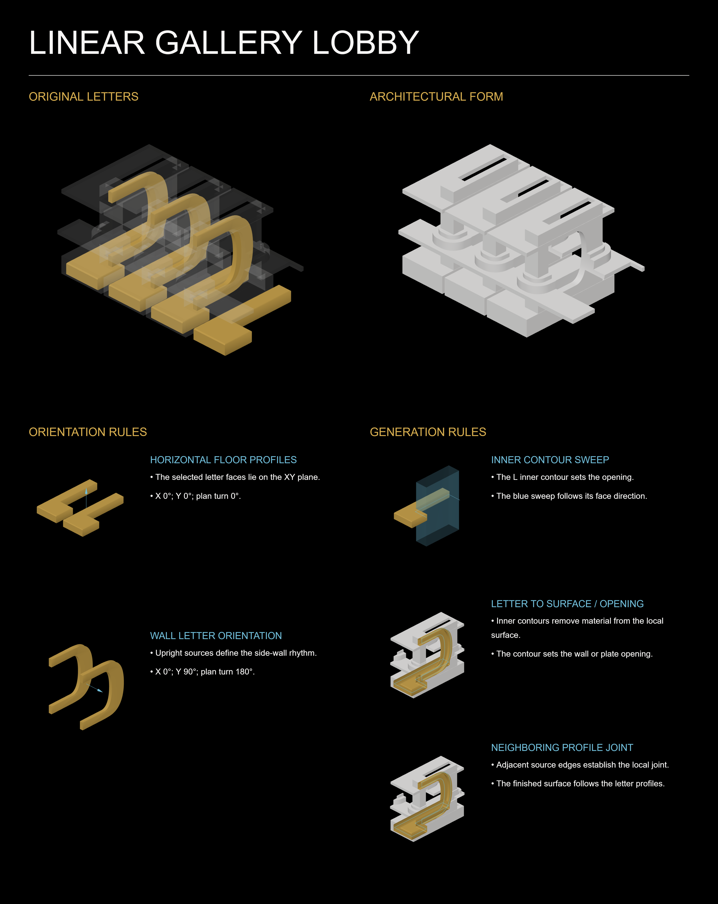
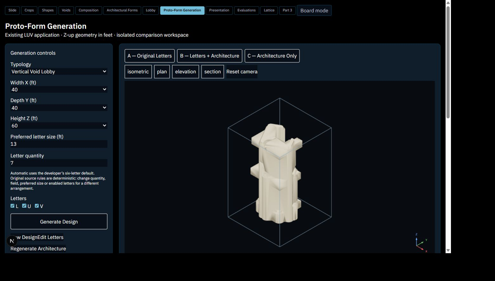
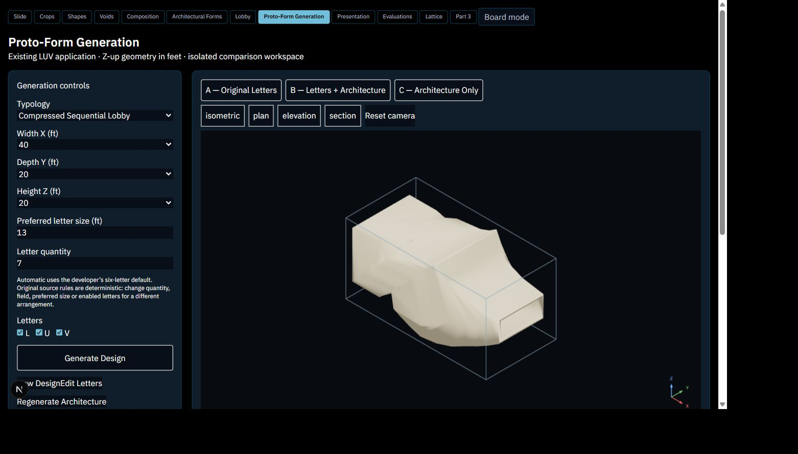
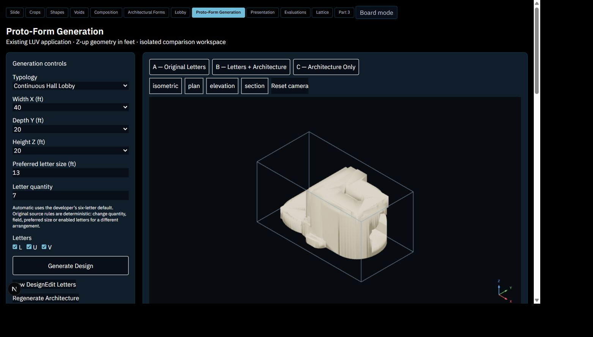
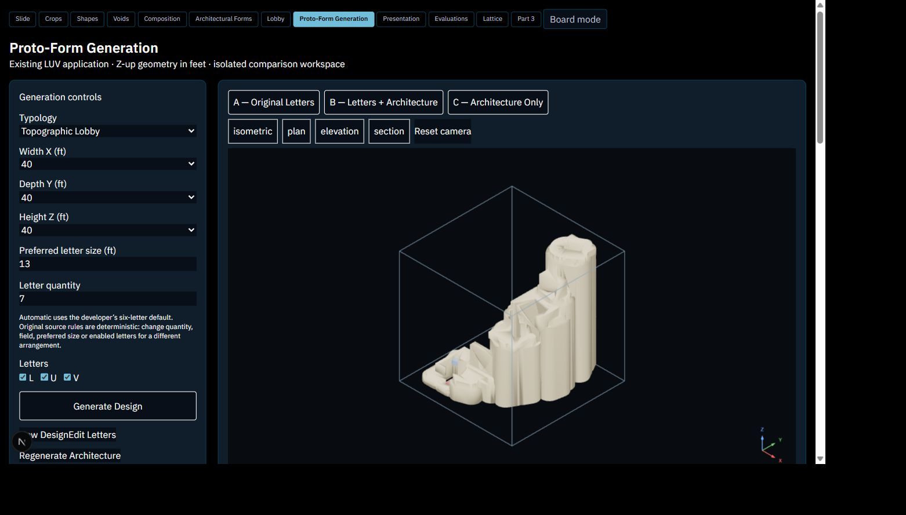
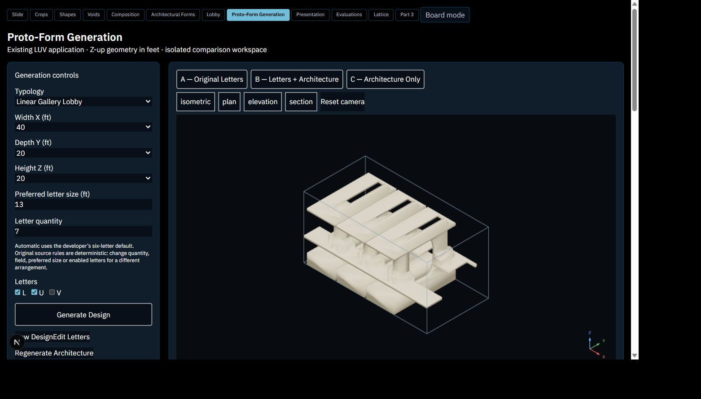

Five exact approved reproductions; ten new designs and matching regenerations passed. Gathering, Workspace and saved studies preserved.
Open Proto-Form Generation · Full integration report
Boards remain proposed for visual review. Each image is one typology, 4096 × 5156 pixels at 300 ppi.
Open this saved design · Full-resolution PNG

| Typology | Engine | Approved study |
|---|---|---|
| Vertical Void Lobby | bf7fc3c | 26 |
| Compressed Sequential Lobby | bfce854 | 66 |
| Continuous Hall Lobby | bf7fc3c | 10 |
| Topographic Lobby | bfce854 | 65 |
| Linear Gallery Lobby | bfce854 | 77 |
TypeScript: 54 existing errors, no new errors. Production compilation succeeded; existing lint failures still prevent a complete build.




